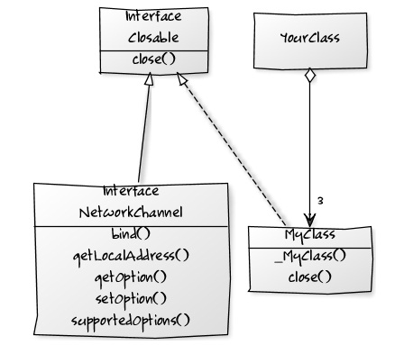

YUML and YPL Database Manual
Don Batory Department of Computer Science The University of Texas at Austin Austin, TX, USA
Yuml is a free web service for drawing UML class diagrams given a Yuml input specification. As this is a for-profit company, the "free" service comes with some strings attached. Namely, it will produce a pretty class diagram for you provided that your specification is not too complicated. To familiarize yourself with Yuml:
[student|name]has-loves[course|name]
- and Yuml returns this gorgeous picture:
Draw some diagrams of your own. When you feel comfortable, proceed to the next section.
Yuml Specifications
A Yuml specification is elegant. Here is a BNF of a subset of Yuml that MDELite uses for class diagrams. Literals (a.k.a. tokens) are in single `quotes'.
// This is a crude grammar for Yuml.
// The Yuml grammar for class diagrams is essentially the following
// (but note, Yuml is more general)
YumlSpec : Line+ ; // one or more lines
Line: Box | Connection ;
Box : '[' Class ']' ;
Connection : Box [End1] [Role1] '-' [Role2] [End2] Box ;
End1 : '<>' | '++' | '^' | '<' ;
End2 : '<>' | '++' | '^' | '>' ;
Role1 : String ; // String that has no ']' chars
Class : String // name only
| String '|' String // name and methods only
| String '|' String '|' String // name, field, and methods
;
Note that a String token is mentioned above. This not a Java String, but one that is devoid of the characters:
| comma | , |
| left brace | [ |
| right brace | ] |
| less than | < |
| greater than | > |
| minus | - |
Further, a semicolon ";" means new line. Some hints:
- As Yuml doesn't like "[]" as in "String[]", I use "#" -- so "String[]" becomes "String#".
- As Yuml doesn't like commas (as in "foo(int x, int y)"), I simply use blanks between types -- like "foo(int int)".
- As Yuml has no indicator to distinguish static from non-static, I simply preface the names of static members with an underscore -- like "_bar()".
Consider the following Yuml specification:
[interface;Closable|close()]
[interface;NetworkChannel|bind();getLocalAddress();getOption();setOption();supportedOptions()]
[MyClass|_MyClass();close()]
[interface;Closable]^-.-[MyClass]
[YourClass]<>-3>[MyClass]
[interface;Closable]^-[interface;NetworkChannel]
Yuml produces this beauty:

Warning! Do not read the above specification too deeply! 'Interface;Closable' is a String. The word 'Interface' means nothing to Yuml. It could just as well have been 'George', which also means nothing to Yuml. What Yuml does understand is ';' (semicolon), which means add a new line. So 'Interface;Closable' produces a 2-line name in the above figure. And the string 'bind();getLocalAdddress()' means print strings 'bind()' and 'getLocalAddress()' on separate lines.
The YPL Schema
Here is the YPL schema (ypl.schema.pl), which can encode YUML diagrams as a database of tuples:
% yuml class schema
dbase(ypl,[yumlBox,yumlAssociation]).
% type = n (for note), c (for class), i (for interface)
table(yumlBox,[id,type,"name","fields","methods"]).
% end1 = <> | ++ | ^ | < | "" (nothing)
% end2 = <> | ++ | ^ | > | "" (nothing)
% lineType = - | -.-
table(yumlAssociation,[id,box1,"role1","end1","lineType",box2,"role2","end2"]).
Here is a translation of (i.e., the database of tuples that encodes) the specification of the first figure:
dbase(ypl,[yumlBox,yumlAssociation]).
table(yumlBox,[id,type,"name","fields","methods"]).
yumlBox(b0,c,'student','name','').
yumlBox(b1,c,'course','name','').
table(yumlAssociation,[id,box1,"role1","end1","lineType",box2,"role2","end2"]).
yumlAssociation(a0,b0,'has','','-',b1,'loves','').
And here is a MDL.ClassYumlParser translation of the specification of the second figure:
dbase(ypl,[yumlBox,yumlAssociation]).
table(yumlBox,[id,type,"name","fields","methods"]).
yumlBox(b0,i,';Closable','close()','').
yumlBox(b1,i,';NetworkChannel','bind();getLocalAddress();getOption();setOption();supportedOptions()','').
yumlBox(b2,c,'MyClass','_MyClass();close()','').
yumlBox(b3,c,'YourClass','','').
table(yumlAssociation,[id,box1,"role1","end1","lineType",box2,"role2","end2"]).
yumlAssociation(a0,b0,'','^','-.-',b2,'','').
yumlAssociation(a1,b3,'','<>','-',b2,'3','>').
yumlAssociation(a2,b0,'','^','-',b1,'','').
Of course, you can take these databases and convert them back into Yuml specs using MDL.ClassYumlUnParser. See the MDELite Manual for more details.
YPL Constraints
There indeed are YPL constraints. I have not posted them, as they are good examples for homework assignments.